Multiclass semantic segmentation using DeepLabV3+
Author: Soumik Rakshit
Date created: 2021/08/31
Last modified: 2024/01/05
Description: Implement DeepLabV3+ architecture for Multi-class Semantic Segmentation.

Introduction
Semantic segmentation, with the goal to assign semantic labels to every pixel in an image, is an essential computer vision task. In this example, we implement the DeepLabV3+ model for multi-class semantic segmentation, a fully-convolutional architecture that performs well on semantic segmentation benchmarks.
References:
- Encoder-Decoder with Atrous Separable Convolution for Semantic Image Segmentation
- Rethinking Atrous Convolution for Semantic Image Segmentation
- DeepLab: Semantic Image Segmentation with Deep Convolutional Nets, Atrous Convolution, and Fully Connected CRFs
Downloading the data
We will use the Crowd Instance-level Human Parsing Dataset for training our model. The Crowd Instance-level Human Parsing (CIHP) dataset has 38,280 diverse human images. Each image in CIHP is labeled with pixel-wise annotations for 20 categories, as well as instance-level identification. This dataset can be used for the "human part segmentation" task.
import keras
from keras import layers
from keras import ops
import os
import numpy as np
from glob import glob
import cv2
from scipy.io import loadmat
import matplotlib.pyplot as plt
# For data preprocessing
from tensorflow import image as tf_image
from tensorflow import data as tf_data
from tensorflow import io as tf_io
!gdown "1B9A9UCJYMwTL4oBEo4RZfbMZMaZhKJaz&confirm=t"
!unzip -q instance-level-human-parsing.zip
Downloading...
From: https://drive.google.com/uc?id=1B9A9UCJYMwTL4oBEo4RZfbMZMaZhKJaz&confirm=t
To: /content/keras-io/scripts/tmp_7009966/instance-level-human-parsing.zip
100% 2.91G/2.91G [00:22<00:00, 129MB/s]
Creating a TensorFlow Dataset
Training on the entire CIHP dataset with 38,280 images takes a lot of time, hence we will be using a smaller subset of 200 images for training our model in this example.
IMAGE_SIZE = 512
BATCH_SIZE = 4
NUM_CLASSES = 20
DATA_DIR = "./instance-level_human_parsing/instance-level_human_parsing/Training"
NUM_TRAIN_IMAGES = 1000
NUM_VAL_IMAGES = 50
train_images = sorted(glob(os.path.join(DATA_DIR, "Images/*")))[:NUM_TRAIN_IMAGES]
train_masks = sorted(glob(os.path.join(DATA_DIR, "Category_ids/*")))[:NUM_TRAIN_IMAGES]
val_images = sorted(glob(os.path.join(DATA_DIR, "Images/*")))[
NUM_TRAIN_IMAGES : NUM_VAL_IMAGES + NUM_TRAIN_IMAGES
]
val_masks = sorted(glob(os.path.join(DATA_DIR, "Category_ids/*")))[
NUM_TRAIN_IMAGES : NUM_VAL_IMAGES + NUM_TRAIN_IMAGES
]
def read_image(image_path, mask=False):
image = tf_io.read_file(image_path)
if mask:
image = tf_image.decode_png(image, channels=1)
image.set_shape([None, None, 1])
image = tf_image.resize(images=image, size=[IMAGE_SIZE, IMAGE_SIZE])
else:
image = tf_image.decode_png(image, channels=3)
image.set_shape([None, None, 3])
image = tf_image.resize(images=image, size=[IMAGE_SIZE, IMAGE_SIZE])
return image
def load_data(image_list, mask_list):
image = read_image(image_list)
mask = read_image(mask_list, mask=True)
return image, mask
def data_generator(image_list, mask_list):
dataset = tf_data.Dataset.from_tensor_slices((image_list, mask_list))
dataset = dataset.map(load_data, num_parallel_calls=tf_data.AUTOTUNE)
dataset = dataset.batch(BATCH_SIZE, drop_remainder=True)
return dataset
train_dataset = data_generator(train_images, train_masks)
val_dataset = data_generator(val_images, val_masks)
print("Train Dataset:", train_dataset)
print("Val Dataset:", val_dataset)
Train Dataset: <_BatchDataset element_spec=(TensorSpec(shape=(4, 512, 512, 3), dtype=tf.float32, name=None), TensorSpec(shape=(4, 512, 512, 1), dtype=tf.float32, name=None))>
Val Dataset: <_BatchDataset element_spec=(TensorSpec(shape=(4, 512, 512, 3), dtype=tf.float32, name=None), TensorSpec(shape=(4, 512, 512, 1), dtype=tf.float32, name=None))>
Building the DeepLabV3+ model
DeepLabv3+ extends DeepLabv3 by adding an encoder-decoder structure. The encoder module processes multiscale contextual information by applying dilated convolution at multiple scales, while the decoder module refines the segmentation results along object boundaries.

Dilated convolution: With dilated convolution, as we go deeper in the network, we can keep the stride constant but with larger field-of-view without increasing the number of parameters or the amount of computation. Besides, it enables larger output feature maps, which is useful for semantic segmentation.
The reason for using Dilated Spatial Pyramid Pooling is that it was shown that as the sampling rate becomes larger, the number of valid filter weights (i.e., weights that are applied to the valid feature region, instead of padded zeros) becomes smaller.
def convolution_block(
block_input,
num_filters=256,
kernel_size=3,
dilation_rate=1,
use_bias=False,
):
x = layers.Conv2D(
num_filters,
kernel_size=kernel_size,
dilation_rate=dilation_rate,
padding="same",
use_bias=use_bias,
kernel_initializer=keras.initializers.HeNormal(),
)(block_input)
x = layers.BatchNormalization()(x)
return ops.nn.relu(x)
def DilatedSpatialPyramidPooling(dspp_input):
dims = dspp_input.shape
x = layers.AveragePooling2D(pool_size=(dims[-3], dims[-2]))(dspp_input)
x = convolution_block(x, kernel_size=1, use_bias=True)
out_pool = layers.UpSampling2D(
size=(dims[-3] // x.shape[1], dims[-2] // x.shape[2]),
interpolation="bilinear",
)(x)
out_1 = convolution_block(dspp_input, kernel_size=1, dilation_rate=1)
out_6 = convolution_block(dspp_input, kernel_size=3, dilation_rate=6)
out_12 = convolution_block(dspp_input, kernel_size=3, dilation_rate=12)
out_18 = convolution_block(dspp_input, kernel_size=3, dilation_rate=18)
x = layers.Concatenate(axis=-1)([out_pool, out_1, out_6, out_12, out_18])
output = convolution_block(x, kernel_size=1)
return output
The encoder features are first bilinearly upsampled by a factor 4, and then
concatenated with the corresponding low-level features from the network backbone that
have the same spatial resolution. For this example, we
use a ResNet50 pretrained on ImageNet as the backbone model, and we use
the low-level features from the conv4_block6_2_relu block of the backbone.
def DeeplabV3Plus(image_size, num_classes):
model_input = keras.Input(shape=(image_size, image_size, 3))
preprocessed = keras.applications.resnet50.preprocess_input(model_input)
resnet50 = keras.applications.ResNet50(
weights="imagenet", include_top=False, input_tensor=preprocessed
)
x = resnet50.get_layer("conv4_block6_2_relu").output
x = DilatedSpatialPyramidPooling(x)
input_a = layers.UpSampling2D(
size=(image_size // 4 // x.shape[1], image_size // 4 // x.shape[2]),
interpolation="bilinear",
)(x)
input_b = resnet50.get_layer("conv2_block3_2_relu").output
input_b = convolution_block(input_b, num_filters=48, kernel_size=1)
x = layers.Concatenate(axis=-1)([input_a, input_b])
x = convolution_block(x)
x = convolution_block(x)
x = layers.UpSampling2D(
size=(image_size // x.shape[1], image_size // x.shape[2]),
interpolation="bilinear",
)(x)
model_output = layers.Conv2D(num_classes, kernel_size=(1, 1), padding="same")(x)
return keras.Model(inputs=model_input, outputs=model_output)
model = DeeplabV3Plus(image_size=IMAGE_SIZE, num_classes=NUM_CLASSES)
model.summary()
Downloading data from https://storage.googleapis.com/tensorflow/keras-applications/resnet/resnet50_weights_tf_dim_ordering_tf_kernels_notop.h5
94765736/94765736 ━━━━━━━━━━━━━━━━━━━━ 1s 0us/step
Model: "functional_1"
┏━━━━━━━━━━━━━━━━━━━━━━━━━━━━┳━━━━━━━━━━━━━━━━━━━━━━━━┳━━━━━━━━━━━┳━━━━━━━━━━━━━━━━━━━━━━━━━━━━━┓ ┃ Layer (type) ┃ Output Shape ┃ Param # ┃ Connected to ┃ ┡━━━━━━━━━━━━━━━━━━━━━━━━━━━━╇━━━━━━━━━━━━━━━━━━━━━━━━╇━━━━━━━━━━━╇━━━━━━━━━━━━━━━━━━━━━━━━━━━━━┩ │ input_layer (InputLayer) │ (None, 512, 512, 3) │ 0 │ - │ ├────────────────────────────┼────────────────────────┼───────────┼─────────────────────────────┤ │ get_item (GetItem) │ (None, 512, 512) │ 0 │ input_layer[0][0] │ ├────────────────────────────┼────────────────────────┼───────────┼─────────────────────────────┤ │ get_item_1 (GetItem) │ (None, 512, 512) │ 0 │ input_layer[0][0] │ ├────────────────────────────┼────────────────────────┼───────────┼─────────────────────────────┤ │ get_item_2 (GetItem) │ (None, 512, 512) │ 0 │ input_layer[0][0] │ ├────────────────────────────┼────────────────────────┼───────────┼─────────────────────────────┤ │ stack (Stack) │ (None, 512, 512, 3) │ 0 │ get_item[0][0], │ │ │ │ │ get_item_1[0][0], │ │ │ │ │ get_item_2[0][0] │ ├────────────────────────────┼────────────────────────┼───────────┼─────────────────────────────┤ │ add (Add) │ (None, 512, 512, 3) │ 0 │ stack[0][0] │ ├────────────────────────────┼────────────────────────┼───────────┼─────────────────────────────┤ │ conv1_pad (ZeroPadding2D) │ (None, 518, 518, 3) │ 0 │ add[0][0] │ ├────────────────────────────┼────────────────────────┼───────────┼─────────────────────────────┤ │ conv1_conv (Conv2D) │ (None, 256, 256, 64) │ 9,472 │ conv1_pad[0][0] │ ├────────────────────────────┼────────────────────────┼───────────┼─────────────────────────────┤ │ conv1_bn │ (None, 256, 256, 64) │ 256 │ conv1_conv[0][0] │ │ (BatchNormalization) │ │ │ │ ├────────────────────────────┼────────────────────────┼───────────┼─────────────────────────────┤ │ conv1_relu (Activation) │ (None, 256, 256, 64) │ 0 │ conv1_bn[0][0] │ ├────────────────────────────┼────────────────────────┼───────────┼─────────────────────────────┤ │ pool1_pad (ZeroPadding2D) │ (None, 258, 258, 64) │ 0 │ conv1_relu[0][0] │ ├────────────────────────────┼────────────────────────┼───────────┼─────────────────────────────┤ │ pool1_pool (MaxPooling2D) │ (None, 128, 128, 64) │ 0 │ pool1_pad[0][0] │ ├────────────────────────────┼────────────────────────┼───────────┼─────────────────────────────┤ │ conv2_block1_1_conv │ (None, 128, 128, 64) │ 4,160 │ pool1_pool[0][0] │ │ (Conv2D) │ │ │ │ ├────────────────────────────┼────────────────────────┼───────────┼─────────────────────────────┤ │ conv2_block1_1_bn │ (None, 128, 128, 64) │ 256 │ conv2_block1_1_conv[0][0] │ │ (BatchNormalization) │ │ │ │ ├────────────────────────────┼────────────────────────┼───────────┼─────────────────────────────┤ │ conv2_block1_1_relu │ (None, 128, 128, 64) │ 0 │ conv2_block1_1_bn[0][0] │ │ (Activation) │ │ │ │ ├────────────────────────────┼────────────────────────┼───────────┼─────────────────────────────┤ │ conv2_block1_2_conv │ (None, 128, 128, 64) │ 36,928 │ conv2_block1_1_relu[0][0] │ │ (Conv2D) │ │ │ │ ├────────────────────────────┼────────────────────────┼───────────┼─────────────────────────────┤ │ conv2_block1_2_bn │ (None, 128, 128, 64) │ 256 │ conv2_block1_2_conv[0][0] │ │ (BatchNormalization) │ │ │ │ ├────────────────────────────┼────────────────────────┼───────────┼─────────────────────────────┤ │ conv2_block1_2_relu │ (None, 128, 128, 64) │ 0 │ conv2_block1_2_bn[0][0] │ │ (Activation) │ │ │ │ ├────────────────────────────┼────────────────────────┼───────────┼─────────────────────────────┤ │ conv2_block1_0_conv │ (None, 128, 128, 256) │ 16,640 │ pool1_pool[0][0] │ │ (Conv2D) │ │ │ │ ├────────────────────────────┼────────────────────────┼───────────┼─────────────────────────────┤ │ conv2_block1_3_conv │ (None, 128, 128, 256) │ 16,640 │ conv2_block1_2_relu[0][0] │ │ (Conv2D) │ │ │ │ ├────────────────────────────┼────────────────────────┼───────────┼─────────────────────────────┤ │ conv2_block1_0_bn │ (None, 128, 128, 256) │ 1,024 │ conv2_block1_0_conv[0][0] │ │ (BatchNormalization) │ │ │ │ ├────────────────────────────┼────────────────────────┼───────────┼─────────────────────────────┤ │ conv2_block1_3_bn │ (None, 128, 128, 256) │ 1,024 │ conv2_block1_3_conv[0][0] │ │ (BatchNormalization) │ │ │ │ ├────────────────────────────┼────────────────────────┼───────────┼─────────────────────────────┤ │ conv2_block1_add (Add) │ (None, 128, 128, 256) │ 0 │ conv2_block1_0_bn[0][0], │ │ │ │ │ conv2_block1_3_bn[0][0] │ ├────────────────────────────┼────────────────────────┼───────────┼─────────────────────────────┤ │ conv2_block1_out │ (None, 128, 128, 256) │ 0 │ conv2_block1_add[0][0] │ │ (Activation) │ │ │ │ ├────────────────────────────┼────────────────────────┼───────────┼─────────────────────────────┤ │ conv2_block2_1_conv │ (None, 128, 128, 64) │ 16,448 │ conv2_block1_out[0][0] │ │ (Conv2D) │ │ │ │ ├────────────────────────────┼────────────────────────┼───────────┼─────────────────────────────┤ │ conv2_block2_1_bn │ (None, 128, 128, 64) │ 256 │ conv2_block2_1_conv[0][0] │ │ (BatchNormalization) │ │ │ │ ├────────────────────────────┼────────────────────────┼───────────┼─────────────────────────────┤ │ conv2_block2_1_relu │ (None, 128, 128, 64) │ 0 │ conv2_block2_1_bn[0][0] │ │ (Activation) │ │ │ │ ├────────────────────────────┼────────────────────────┼───────────┼─────────────────────────────┤ │ conv2_block2_2_conv │ (None, 128, 128, 64) │ 36,928 │ conv2_block2_1_relu[0][0] │ │ (Conv2D) │ │ │ │ ├────────────────────────────┼────────────────────────┼───────────┼─────────────────────────────┤ │ conv2_block2_2_bn │ (None, 128, 128, 64) │ 256 │ conv2_block2_2_conv[0][0] │ │ (BatchNormalization) │ │ │ │ ├────────────────────────────┼────────────────────────┼───────────┼─────────────────────────────┤ │ conv2_block2_2_relu │ (None, 128, 128, 64) │ 0 │ conv2_block2_2_bn[0][0] │ │ (Activation) │ │ │ │ ├────────────────────────────┼────────────────────────┼───────────┼─────────────────────────────┤ │ conv2_block2_3_conv │ (None, 128, 128, 256) │ 16,640 │ conv2_block2_2_relu[0][0] │ │ (Conv2D) │ │ │ │ ├────────────────────────────┼────────────────────────┼───────────┼─────────────────────────────┤ │ conv2_block2_3_bn │ (None, 128, 128, 256) │ 1,024 │ conv2_block2_3_conv[0][0] │ │ (BatchNormalization) │ │ │ │ ├────────────────────────────┼────────────────────────┼───────────┼─────────────────────────────┤ │ conv2_block2_add (Add) │ (None, 128, 128, 256) │ 0 │ conv2_block1_out[0][0], │ │ │ │ │ conv2_block2_3_bn[0][0] │ ├────────────────────────────┼────────────────────────┼───────────┼─────────────────────────────┤ │ conv2_block2_out │ (None, 128, 128, 256) │ 0 │ conv2_block2_add[0][0] │ │ (Activation) │ │ │ │ ├────────────────────────────┼────────────────────────┼───────────┼─────────────────────────────┤ │ conv2_block3_1_conv │ (None, 128, 128, 64) │ 16,448 │ conv2_block2_out[0][0] │ │ (Conv2D) │ │ │ │ ├────────────────────────────┼────────────────────────┼───────────┼─────────────────────────────┤ │ conv2_block3_1_bn │ (None, 128, 128, 64) │ 256 │ conv2_block3_1_conv[0][0] │ │ (BatchNormalization) │ │ │ │ ├────────────────────────────┼────────────────────────┼───────────┼─────────────────────────────┤ │ conv2_block3_1_relu │ (None, 128, 128, 64) │ 0 │ conv2_block3_1_bn[0][0] │ │ (Activation) │ │ │ │ ├────────────────────────────┼────────────────────────┼───────────┼─────────────────────────────┤ │ conv2_block3_2_conv │ (None, 128, 128, 64) │ 36,928 │ conv2_block3_1_relu[0][0] │ │ (Conv2D) │ │ │ │ ├────────────────────────────┼────────────────────────┼───────────┼─────────────────────────────┤ │ conv2_block3_2_bn │ (None, 128, 128, 64) │ 256 │ conv2_block3_2_conv[0][0] │ │ (BatchNormalization) │ │ │ │ ├────────────────────────────┼────────────────────────┼───────────┼─────────────────────────────┤ │ conv2_block3_2_relu │ (None, 128, 128, 64) │ 0 │ conv2_block3_2_bn[0][0] │ │ (Activation) │ │ │ │ ├────────────────────────────┼────────────────────────┼───────────┼─────────────────────────────┤ │ conv2_block3_3_conv │ (None, 128, 128, 256) │ 16,640 │ conv2_block3_2_relu[0][0] │ │ (Conv2D) │ │ │ │ ├────────────────────────────┼────────────────────────┼───────────┼─────────────────────────────┤ │ conv2_block3_3_bn │ (None, 128, 128, 256) │ 1,024 │ conv2_block3_3_conv[0][0] │ │ (BatchNormalization) │ │ │ │ ├────────────────────────────┼────────────────────────┼───────────┼─────────────────────────────┤ │ conv2_block3_add (Add) │ (None, 128, 128, 256) │ 0 │ conv2_block2_out[0][0], │ │ │ │ │ conv2_block3_3_bn[0][0] │ ├────────────────────────────┼────────────────────────┼───────────┼─────────────────────────────┤ │ conv2_block3_out │ (None, 128, 128, 256) │ 0 │ conv2_block3_add[0][0] │ │ (Activation) │ │ │ │ ├────────────────────────────┼────────────────────────┼───────────┼─────────────────────────────┤ │ conv3_block1_1_conv │ (None, 64, 64, 128) │ 32,896 │ conv2_block3_out[0][0] │ │ (Conv2D) │ │ │ │ ├────────────────────────────┼────────────────────────┼───────────┼─────────────────────────────┤ │ conv3_block1_1_bn │ (None, 64, 64, 128) │ 512 │ conv3_block1_1_conv[0][0] │ │ (BatchNormalization) │ │ │ │ ├────────────────────────────┼────────────────────────┼───────────┼─────────────────────────────┤ │ conv3_block1_1_relu │ (None, 64, 64, 128) │ 0 │ conv3_block1_1_bn[0][0] │ │ (Activation) │ │ │ │ ├────────────────────────────┼────────────────────────┼───────────┼─────────────────────────────┤ │ conv3_block1_2_conv │ (None, 64, 64, 128) │ 147,584 │ conv3_block1_1_relu[0][0] │ │ (Conv2D) │ │ │ │ ├────────────────────────────┼────────────────────────┼───────────┼─────────────────────────────┤ │ conv3_block1_2_bn │ (None, 64, 64, 128) │ 512 │ conv3_block1_2_conv[0][0] │ │ (BatchNormalization) │ │ │ │ ├────────────────────────────┼────────────────────────┼───────────┼─────────────────────────────┤ │ conv3_block1_2_relu │ (None, 64, 64, 128) │ 0 │ conv3_block1_2_bn[0][0] │ │ (Activation) │ │ │ │ ├────────────────────────────┼────────────────────────┼───────────┼─────────────────────────────┤ │ conv3_block1_0_conv │ (None, 64, 64, 512) │ 131,584 │ conv2_block3_out[0][0] │ │ (Conv2D) │ │ │ │ ├────────────────────────────┼────────────────────────┼───────────┼─────────────────────────────┤ │ conv3_block1_3_conv │ (None, 64, 64, 512) │ 66,048 │ conv3_block1_2_relu[0][0] │ │ (Conv2D) │ │ │ │ ├────────────────────────────┼────────────────────────┼───────────┼─────────────────────────────┤ │ conv3_block1_0_bn │ (None, 64, 64, 512) │ 2,048 │ conv3_block1_0_conv[0][0] │ │ (BatchNormalization) │ │ │ │ ├────────────────────────────┼────────────────────────┼───────────┼─────────────────────────────┤ │ conv3_block1_3_bn │ (None, 64, 64, 512) │ 2,048 │ conv3_block1_3_conv[0][0] │ │ (BatchNormalization) │ │ │ │ ├────────────────────────────┼────────────────────────┼───────────┼─────────────────────────────┤ │ conv3_block1_add (Add) │ (None, 64, 64, 512) │ 0 │ conv3_block1_0_bn[0][0], │ │ │ │ │ conv3_block1_3_bn[0][0] │ ├────────────────────────────┼────────────────────────┼───────────┼─────────────────────────────┤ │ conv3_block1_out │ (None, 64, 64, 512) │ 0 │ conv3_block1_add[0][0] │ │ (Activation) │ │ │ │ ├────────────────────────────┼────────────────────────┼───────────┼─────────────────────────────┤ │ conv3_block2_1_conv │ (None, 64, 64, 128) │ 65,664 │ conv3_block1_out[0][0] │ │ (Conv2D) │ │ │ │ ├────────────────────────────┼────────────────────────┼───────────┼─────────────────────────────┤ │ conv3_block2_1_bn │ (None, 64, 64, 128) │ 512 │ conv3_block2_1_conv[0][0] │ │ (BatchNormalization) │ │ │ │ ├────────────────────────────┼────────────────────────┼───────────┼─────────────────────────────┤ │ conv3_block2_1_relu │ (None, 64, 64, 128) │ 0 │ conv3_block2_1_bn[0][0] │ │ (Activation) │ │ │ │ ├────────────────────────────┼────────────────────────┼───────────┼─────────────────────────────┤ │ conv3_block2_2_conv │ (None, 64, 64, 128) │ 147,584 │ conv3_block2_1_relu[0][0] │ │ (Conv2D) │ │ │ │ ├────────────────────────────┼────────────────────────┼───────────┼─────────────────────────────┤ │ conv3_block2_2_bn │ (None, 64, 64, 128) │ 512 │ conv3_block2_2_conv[0][0] │ │ (BatchNormalization) │ │ │ │ ├────────────────────────────┼────────────────────────┼───────────┼─────────────────────────────┤ │ conv3_block2_2_relu │ (None, 64, 64, 128) │ 0 │ conv3_block2_2_bn[0][0] │ │ (Activation) │ │ │ │ ├────────────────────────────┼────────────────────────┼───────────┼─────────────────────────────┤ │ conv3_block2_3_conv │ (None, 64, 64, 512) │ 66,048 │ conv3_block2_2_relu[0][0] │ │ (Conv2D) │ │ │ │ ├────────────────────────────┼────────────────────────┼───────────┼─────────────────────────────┤ │ conv3_block2_3_bn │ (None, 64, 64, 512) │ 2,048 │ conv3_block2_3_conv[0][0] │ │ (BatchNormalization) │ │ │ │ ├────────────────────────────┼────────────────────────┼───────────┼─────────────────────────────┤ │ conv3_block2_add (Add) │ (None, 64, 64, 512) │ 0 │ conv3_block1_out[0][0], │ │ │ │ │ conv3_block2_3_bn[0][0] │ ├────────────────────────────┼────────────────────────┼───────────┼─────────────────────────────┤ │ conv3_block2_out │ (None, 64, 64, 512) │ 0 │ conv3_block2_add[0][0] │ │ (Activation) │ │ │ │ ├────────────────────────────┼────────────────────────┼───────────┼─────────────────────────────┤ │ conv3_block3_1_conv │ (None, 64, 64, 128) │ 65,664 │ conv3_block2_out[0][0] │ │ (Conv2D) │ │ │ │ ├────────────────────────────┼────────────────────────┼───────────┼─────────────────────────────┤ │ conv3_block3_1_bn │ (None, 64, 64, 128) │ 512 │ conv3_block3_1_conv[0][0] │ │ (BatchNormalization) │ │ │ │ ├────────────────────────────┼────────────────────────┼───────────┼─────────────────────────────┤ │ conv3_block3_1_relu │ (None, 64, 64, 128) │ 0 │ conv3_block3_1_bn[0][0] │ │ (Activation) │ │ │ │ ├────────────────────────────┼────────────────────────┼───────────┼─────────────────────────────┤ │ conv3_block3_2_conv │ (None, 64, 64, 128) │ 147,584 │ conv3_block3_1_relu[0][0] │ │ (Conv2D) │ │ │ │ ├────────────────────────────┼────────────────────────┼───────────┼─────────────────────────────┤ │ conv3_block3_2_bn │ (None, 64, 64, 128) │ 512 │ conv3_block3_2_conv[0][0] │ │ (BatchNormalization) │ │ │ │ ├────────────────────────────┼────────────────────────┼───────────┼─────────────────────────────┤ │ conv3_block3_2_relu │ (None, 64, 64, 128) │ 0 │ conv3_block3_2_bn[0][0] │ │ (Activation) │ │ │ │ ├────────────────────────────┼────────────────────────┼───────────┼─────────────────────────────┤ │ conv3_block3_3_conv │ (None, 64, 64, 512) │ 66,048 │ conv3_block3_2_relu[0][0] │ │ (Conv2D) │ │ │ │ ├────────────────────────────┼────────────────────────┼───────────┼─────────────────────────────┤ │ conv3_block3_3_bn │ (None, 64, 64, 512) │ 2,048 │ conv3_block3_3_conv[0][0] │ │ (BatchNormalization) │ │ │ │ ├────────────────────────────┼────────────────────────┼───────────┼─────────────────────────────┤ │ conv3_block3_add (Add) │ (None, 64, 64, 512) │ 0 │ conv3_block2_out[0][0], │ │ │ │ │ conv3_block3_3_bn[0][0] │ ├────────────────────────────┼────────────────────────┼───────────┼─────────────────────────────┤ │ conv3_block3_out │ (None, 64, 64, 512) │ 0 │ conv3_block3_add[0][0] │ │ (Activation) │ │ │ │ ├────────────────────────────┼────────────────────────┼───────────┼─────────────────────────────┤ │ conv3_block4_1_conv │ (None, 64, 64, 128) │ 65,664 │ conv3_block3_out[0][0] │ │ (Conv2D) │ │ │ │ ├────────────────────────────┼────────────────────────┼───────────┼─────────────────────────────┤ │ conv3_block4_1_bn │ (None, 64, 64, 128) │ 512 │ conv3_block4_1_conv[0][0] │ │ (BatchNormalization) │ │ │ │ ├────────────────────────────┼────────────────────────┼───────────┼─────────────────────────────┤ │ conv3_block4_1_relu │ (None, 64, 64, 128) │ 0 │ conv3_block4_1_bn[0][0] │ │ (Activation) │ │ │ │ ├────────────────────────────┼────────────────────────┼───────────┼─────────────────────────────┤ │ conv3_block4_2_conv │ (None, 64, 64, 128) │ 147,584 │ conv3_block4_1_relu[0][0] │ │ (Conv2D) │ │ │ │ ├────────────────────────────┼────────────────────────┼───────────┼─────────────────────────────┤ │ conv3_block4_2_bn │ (None, 64, 64, 128) │ 512 │ conv3_block4_2_conv[0][0] │ │ (BatchNormalization) │ │ │ │ ├────────────────────────────┼────────────────────────┼───────────┼─────────────────────────────┤ │ conv3_block4_2_relu │ (None, 64, 64, 128) │ 0 │ conv3_block4_2_bn[0][0] │ │ (Activation) │ │ │ │ ├────────────────────────────┼────────────────────────┼───────────┼─────────────────────────────┤ │ conv3_block4_3_conv │ (None, 64, 64, 512) │ 66,048 │ conv3_block4_2_relu[0][0] │ │ (Conv2D) │ │ │ │ ├────────────────────────────┼────────────────────────┼───────────┼─────────────────────────────┤ │ conv3_block4_3_bn │ (None, 64, 64, 512) │ 2,048 │ conv3_block4_3_conv[0][0] │ │ (BatchNormalization) │ │ │ │ ├────────────────────────────┼────────────────────────┼───────────┼─────────────────────────────┤ │ conv3_block4_add (Add) │ (None, 64, 64, 512) │ 0 │ conv3_block3_out[0][0], │ │ │ │ │ conv3_block4_3_bn[0][0] │ ├────────────────────────────┼────────────────────────┼───────────┼─────────────────────────────┤ │ conv3_block4_out │ (None, 64, 64, 512) │ 0 │ conv3_block4_add[0][0] │ │ (Activation) │ │ │ │ ├────────────────────────────┼────────────────────────┼───────────┼─────────────────────────────┤ │ conv4_block1_1_conv │ (None, 32, 32, 256) │ 131,328 │ conv3_block4_out[0][0] │ │ (Conv2D) │ │ │ │ ├────────────────────────────┼────────────────────────┼───────────┼─────────────────────────────┤ │ conv4_block1_1_bn │ (None, 32, 32, 256) │ 1,024 │ conv4_block1_1_conv[0][0] │ │ (BatchNormalization) │ │ │ │ ├────────────────────────────┼────────────────────────┼───────────┼─────────────────────────────┤ │ conv4_block1_1_relu │ (None, 32, 32, 256) │ 0 │ conv4_block1_1_bn[0][0] │ │ (Activation) │ │ │ │ ├────────────────────────────┼────────────────────────┼───────────┼─────────────────────────────┤ │ conv4_block1_2_conv │ (None, 32, 32, 256) │ 590,080 │ conv4_block1_1_relu[0][0] │ │ (Conv2D) │ │ │ │ ├────────────────────────────┼────────────────────────┼───────────┼─────────────────────────────┤ │ conv4_block1_2_bn │ (None, 32, 32, 256) │ 1,024 │ conv4_block1_2_conv[0][0] │ │ (BatchNormalization) │ │ │ │ ├────────────────────────────┼────────────────────────┼───────────┼─────────────────────────────┤ │ conv4_block1_2_relu │ (None, 32, 32, 256) │ 0 │ conv4_block1_2_bn[0][0] │ │ (Activation) │ │ │ │ ├────────────────────────────┼────────────────────────┼───────────┼─────────────────────────────┤ │ conv4_block1_0_conv │ (None, 32, 32, 1024) │ 525,312 │ conv3_block4_out[0][0] │ │ (Conv2D) │ │ │ │ ├────────────────────────────┼────────────────────────┼───────────┼─────────────────────────────┤ │ conv4_block1_3_conv │ (None, 32, 32, 1024) │ 263,168 │ conv4_block1_2_relu[0][0] │ │ (Conv2D) │ │ │ │ ├────────────────────────────┼────────────────────────┼───────────┼─────────────────────────────┤ │ conv4_block1_0_bn │ (None, 32, 32, 1024) │ 4,096 │ conv4_block1_0_conv[0][0] │ │ (BatchNormalization) │ │ │ │ ├────────────────────────────┼────────────────────────┼───────────┼─────────────────────────────┤ │ conv4_block1_3_bn │ (None, 32, 32, 1024) │ 4,096 │ conv4_block1_3_conv[0][0] │ │ (BatchNormalization) │ │ │ │ ├────────────────────────────┼────────────────────────┼───────────┼─────────────────────────────┤ │ conv4_block1_add (Add) │ (None, 32, 32, 1024) │ 0 │ conv4_block1_0_bn[0][0], │ │ │ │ │ conv4_block1_3_bn[0][0] │ ├────────────────────────────┼────────────────────────┼───────────┼─────────────────────────────┤ │ conv4_block1_out │ (None, 32, 32, 1024) │ 0 │ conv4_block1_add[0][0] │ │ (Activation) │ │ │ │ ├────────────────────────────┼────────────────────────┼───────────┼─────────────────────────────┤ │ conv4_block2_1_conv │ (None, 32, 32, 256) │ 262,400 │ conv4_block1_out[0][0] │ │ (Conv2D) │ │ │ │ ├────────────────────────────┼────────────────────────┼───────────┼─────────────────────────────┤ │ conv4_block2_1_bn │ (None, 32, 32, 256) │ 1,024 │ conv4_block2_1_conv[0][0] │ │ (BatchNormalization) │ │ │ │ ├────────────────────────────┼────────────────────────┼───────────┼─────────────────────────────┤ │ conv4_block2_1_relu │ (None, 32, 32, 256) │ 0 │ conv4_block2_1_bn[0][0] │ │ (Activation) │ │ │ │ ├────────────────────────────┼────────────────────────┼───────────┼─────────────────────────────┤ │ conv4_block2_2_conv │ (None, 32, 32, 256) │ 590,080 │ conv4_block2_1_relu[0][0] │ │ (Conv2D) │ │ │ │ ├────────────────────────────┼────────────────────────┼───────────┼─────────────────────────────┤ │ conv4_block2_2_bn │ (None, 32, 32, 256) │ 1,024 │ conv4_block2_2_conv[0][0] │ │ (BatchNormalization) │ │ │ │ ├────────────────────────────┼────────────────────────┼───────────┼─────────────────────────────┤ │ conv4_block2_2_relu │ (None, 32, 32, 256) │ 0 │ conv4_block2_2_bn[0][0] │ │ (Activation) │ │ │ │ ├────────────────────────────┼────────────────────────┼───────────┼─────────────────────────────┤ │ conv4_block2_3_conv │ (None, 32, 32, 1024) │ 263,168 │ conv4_block2_2_relu[0][0] │ │ (Conv2D) │ │ │ │ ├────────────────────────────┼────────────────────────┼───────────┼─────────────────────────────┤ │ conv4_block2_3_bn │ (None, 32, 32, 1024) │ 4,096 │ conv4_block2_3_conv[0][0] │ │ (BatchNormalization) │ │ │ │ ├────────────────────────────┼────────────────────────┼───────────┼─────────────────────────────┤ │ conv4_block2_add (Add) │ (None, 32, 32, 1024) │ 0 │ conv4_block1_out[0][0], │ │ │ │ │ conv4_block2_3_bn[0][0] │ ├────────────────────────────┼────────────────────────┼───────────┼─────────────────────────────┤ │ conv4_block2_out │ (None, 32, 32, 1024) │ 0 │ conv4_block2_add[0][0] │ │ (Activation) │ │ │ │ ├────────────────────────────┼────────────────────────┼───────────┼─────────────────────────────┤ │ conv4_block3_1_conv │ (None, 32, 32, 256) │ 262,400 │ conv4_block2_out[0][0] │ │ (Conv2D) │ │ │ │ ├────────────────────────────┼────────────────────────┼───────────┼─────────────────────────────┤ │ conv4_block3_1_bn │ (None, 32, 32, 256) │ 1,024 │ conv4_block3_1_conv[0][0] │ │ (BatchNormalization) │ │ │ │ ├────────────────────────────┼────────────────────────┼───────────┼─────────────────────────────┤ │ conv4_block3_1_relu │ (None, 32, 32, 256) │ 0 │ conv4_block3_1_bn[0][0] │ │ (Activation) │ │ │ │ ├────────────────────────────┼────────────────────────┼───────────┼─────────────────────────────┤ │ conv4_block3_2_conv │ (None, 32, 32, 256) │ 590,080 │ conv4_block3_1_relu[0][0] │ │ (Conv2D) │ │ │ │ ├────────────────────────────┼────────────────────────┼───────────┼─────────────────────────────┤ │ conv4_block3_2_bn │ (None, 32, 32, 256) │ 1,024 │ conv4_block3_2_conv[0][0] │ │ (BatchNormalization) │ │ │ │ ├────────────────────────────┼────────────────────────┼───────────┼─────────────────────────────┤ │ conv4_block3_2_relu │ (None, 32, 32, 256) │ 0 │ conv4_block3_2_bn[0][0] │ │ (Activation) │ │ │ │ ├────────────────────────────┼────────────────────────┼───────────┼─────────────────────────────┤ │ conv4_block3_3_conv │ (None, 32, 32, 1024) │ 263,168 │ conv4_block3_2_relu[0][0] │ │ (Conv2D) │ │ │ │ ├────────────────────────────┼────────────────────────┼───────────┼─────────────────────────────┤ │ conv4_block3_3_bn │ (None, 32, 32, 1024) │ 4,096 │ conv4_block3_3_conv[0][0] │ │ (BatchNormalization) │ │ │ │ ├────────────────────────────┼────────────────────────┼───────────┼─────────────────────────────┤ │ conv4_block3_add (Add) │ (None, 32, 32, 1024) │ 0 │ conv4_block2_out[0][0], │ │ │ │ │ conv4_block3_3_bn[0][0] │ ├────────────────────────────┼────────────────────────┼───────────┼─────────────────────────────┤ │ conv4_block3_out │ (None, 32, 32, 1024) │ 0 │ conv4_block3_add[0][0] │ │ (Activation) │ │ │ │ ├────────────────────────────┼────────────────────────┼───────────┼─────────────────────────────┤ │ conv4_block4_1_conv │ (None, 32, 32, 256) │ 262,400 │ conv4_block3_out[0][0] │ │ (Conv2D) │ │ │ │ ├────────────────────────────┼────────────────────────┼───────────┼─────────────────────────────┤ │ conv4_block4_1_bn │ (None, 32, 32, 256) │ 1,024 │ conv4_block4_1_conv[0][0] │ │ (BatchNormalization) │ │ │ │ ├────────────────────────────┼────────────────────────┼───────────┼─────────────────────────────┤ │ conv4_block4_1_relu │ (None, 32, 32, 256) │ 0 │ conv4_block4_1_bn[0][0] │ │ (Activation) │ │ │ │ ├────────────────────────────┼────────────────────────┼───────────┼─────────────────────────────┤ │ conv4_block4_2_conv │ (None, 32, 32, 256) │ 590,080 │ conv4_block4_1_relu[0][0] │ │ (Conv2D) │ │ │ │ ├────────────────────────────┼────────────────────────┼───────────┼─────────────────────────────┤ │ conv4_block4_2_bn │ (None, 32, 32, 256) │ 1,024 │ conv4_block4_2_conv[0][0] │ │ (BatchNormalization) │ │ │ │ ├────────────────────────────┼────────────────────────┼───────────┼─────────────────────────────┤ │ conv4_block4_2_relu │ (None, 32, 32, 256) │ 0 │ conv4_block4_2_bn[0][0] │ │ (Activation) │ │ │ │ ├────────────────────────────┼────────────────────────┼───────────┼─────────────────────────────┤ │ conv4_block4_3_conv │ (None, 32, 32, 1024) │ 263,168 │ conv4_block4_2_relu[0][0] │ │ (Conv2D) │ │ │ │ ├────────────────────────────┼────────────────────────┼───────────┼─────────────────────────────┤ │ conv4_block4_3_bn │ (None, 32, 32, 1024) │ 4,096 │ conv4_block4_3_conv[0][0] │ │ (BatchNormalization) │ │ │ │ ├────────────────────────────┼────────────────────────┼───────────┼─────────────────────────────┤ │ conv4_block4_add (Add) │ (None, 32, 32, 1024) │ 0 │ conv4_block3_out[0][0], │ │ │ │ │ conv4_block4_3_bn[0][0] │ ├────────────────────────────┼────────────────────────┼───────────┼─────────────────────────────┤ │ conv4_block4_out │ (None, 32, 32, 1024) │ 0 │ conv4_block4_add[0][0] │ │ (Activation) │ │ │ │ ├────────────────────────────┼────────────────────────┼───────────┼─────────────────────────────┤ │ conv4_block5_1_conv │ (None, 32, 32, 256) │ 262,400 │ conv4_block4_out[0][0] │ │ (Conv2D) │ │ │ │ ├────────────────────────────┼────────────────────────┼───────────┼─────────────────────────────┤ │ conv4_block5_1_bn │ (None, 32, 32, 256) │ 1,024 │ conv4_block5_1_conv[0][0] │ │ (BatchNormalization) │ │ │ │ ├────────────────────────────┼────────────────────────┼───────────┼─────────────────────────────┤ │ conv4_block5_1_relu │ (None, 32, 32, 256) │ 0 │ conv4_block5_1_bn[0][0] │ │ (Activation) │ │ │ │ ├────────────────────────────┼────────────────────────┼───────────┼─────────────────────────────┤ │ conv4_block5_2_conv │ (None, 32, 32, 256) │ 590,080 │ conv4_block5_1_relu[0][0] │ │ (Conv2D) │ │ │ │ ├────────────────────────────┼────────────────────────┼───────────┼─────────────────────────────┤ │ conv4_block5_2_bn │ (None, 32, 32, 256) │ 1,024 │ conv4_block5_2_conv[0][0] │ │ (BatchNormalization) │ │ │ │ ├────────────────────────────┼────────────────────────┼───────────┼─────────────────────────────┤ │ conv4_block5_2_relu │ (None, 32, 32, 256) │ 0 │ conv4_block5_2_bn[0][0] │ │ (Activation) │ │ │ │ ├────────────────────────────┼────────────────────────┼───────────┼─────────────────────────────┤ │ conv4_block5_3_conv │ (None, 32, 32, 1024) │ 263,168 │ conv4_block5_2_relu[0][0] │ │ (Conv2D) │ │ │ │ ├────────────────────────────┼────────────────────────┼───────────┼─────────────────────────────┤ │ conv4_block5_3_bn │ (None, 32, 32, 1024) │ 4,096 │ conv4_block5_3_conv[0][0] │ │ (BatchNormalization) │ │ │ │ ├────────────────────────────┼────────────────────────┼───────────┼─────────────────────────────┤ │ conv4_block5_add (Add) │ (None, 32, 32, 1024) │ 0 │ conv4_block4_out[0][0], │ │ │ │ │ conv4_block5_3_bn[0][0] │ ├────────────────────────────┼────────────────────────┼───────────┼─────────────────────────────┤ │ conv4_block5_out │ (None, 32, 32, 1024) │ 0 │ conv4_block5_add[0][0] │ │ (Activation) │ │ │ │ ├────────────────────────────┼────────────────────────┼───────────┼─────────────────────────────┤ │ conv4_block6_1_conv │ (None, 32, 32, 256) │ 262,400 │ conv4_block5_out[0][0] │ │ (Conv2D) │ │ │ │ ├────────────────────────────┼────────────────────────┼───────────┼─────────────────────────────┤ │ conv4_block6_1_bn │ (None, 32, 32, 256) │ 1,024 │ conv4_block6_1_conv[0][0] │ │ (BatchNormalization) │ │ │ │ ├────────────────────────────┼────────────────────────┼───────────┼─────────────────────────────┤ │ conv4_block6_1_relu │ (None, 32, 32, 256) │ 0 │ conv4_block6_1_bn[0][0] │ │ (Activation) │ │ │ │ ├────────────────────────────┼────────────────────────┼───────────┼─────────────────────────────┤ │ conv4_block6_2_conv │ (None, 32, 32, 256) │ 590,080 │ conv4_block6_1_relu[0][0] │ │ (Conv2D) │ │ │ │ ├────────────────────────────┼────────────────────────┼───────────┼─────────────────────────────┤ │ conv4_block6_2_bn │ (None, 32, 32, 256) │ 1,024 │ conv4_block6_2_conv[0][0] │ │ (BatchNormalization) │ │ │ │ ├────────────────────────────┼────────────────────────┼───────────┼─────────────────────────────┤ │ conv4_block6_2_relu │ (None, 32, 32, 256) │ 0 │ conv4_block6_2_bn[0][0] │ │ (Activation) │ │ │ │ ├────────────────────────────┼────────────────────────┼───────────┼─────────────────────────────┤ │ average_pooling2d │ (None, 1, 1, 256) │ 0 │ conv4_block6_2_relu[0][0] │ │ (AveragePooling2D) │ │ │ │ ├────────────────────────────┼────────────────────────┼───────────┼─────────────────────────────┤ │ conv2d (Conv2D) │ (None, 1, 1, 256) │ 65,792 │ average_pooling2d[0][0] │ ├────────────────────────────┼────────────────────────┼───────────┼─────────────────────────────┤ │ batch_normalization │ (None, 1, 1, 256) │ 1,024 │ conv2d[0][0] │ │ (BatchNormalization) │ │ │ │ ├────────────────────────────┼────────────────────────┼───────────┼─────────────────────────────┤ │ conv2d_1 (Conv2D) │ (None, 32, 32, 256) │ 65,536 │ conv4_block6_2_relu[0][0] │ ├────────────────────────────┼────────────────────────┼───────────┼─────────────────────────────┤ │ conv2d_2 (Conv2D) │ (None, 32, 32, 256) │ 589,824 │ conv4_block6_2_relu[0][0] │ ├────────────────────────────┼────────────────────────┼───────────┼─────────────────────────────┤ │ conv2d_3 (Conv2D) │ (None, 32, 32, 256) │ 589,824 │ conv4_block6_2_relu[0][0] │ ├────────────────────────────┼────────────────────────┼───────────┼─────────────────────────────┤ │ conv2d_4 (Conv2D) │ (None, 32, 32, 256) │ 589,824 │ conv4_block6_2_relu[0][0] │ ├────────────────────────────┼────────────────────────┼───────────┼─────────────────────────────┤ │ relu (Relu) │ (None, 1, 1, 256) │ 0 │ batch_normalization[0][0] │ ├────────────────────────────┼────────────────────────┼───────────┼─────────────────────────────┤ │ batch_normalization_1 │ (None, 32, 32, 256) │ 1,024 │ conv2d_1[0][0] │ │ (BatchNormalization) │ │ │ │ ├────────────────────────────┼────────────────────────┼───────────┼─────────────────────────────┤ │ batch_normalization_2 │ (None, 32, 32, 256) │ 1,024 │ conv2d_2[0][0] │ │ (BatchNormalization) │ │ │ │ ├────────────────────────────┼────────────────────────┼───────────┼─────────────────────────────┤ │ batch_normalization_3 │ (None, 32, 32, 256) │ 1,024 │ conv2d_3[0][0] │ │ (BatchNormalization) │ │ │ │ ├────────────────────────────┼────────────────────────┼───────────┼─────────────────────────────┤ │ batch_normalization_4 │ (None, 32, 32, 256) │ 1,024 │ conv2d_4[0][0] │ │ (BatchNormalization) │ │ │ │ ├────────────────────────────┼────────────────────────┼───────────┼─────────────────────────────┤ │ up_sampling2d │ (None, 32, 32, 256) │ 0 │ relu[0][0] │ │ (UpSampling2D) │ │ │ │ ├────────────────────────────┼────────────────────────┼───────────┼─────────────────────────────┤ │ relu_1 (Relu) │ (None, 32, 32, 256) │ 0 │ batch_normalization_1[0][0] │ ├────────────────────────────┼────────────────────────┼───────────┼─────────────────────────────┤ │ relu_2 (Relu) │ (None, 32, 32, 256) │ 0 │ batch_normalization_2[0][0] │ ├────────────────────────────┼────────────────────────┼───────────┼─────────────────────────────┤ │ relu_3 (Relu) │ (None, 32, 32, 256) │ 0 │ batch_normalization_3[0][0] │ ├────────────────────────────┼────────────────────────┼───────────┼─────────────────────────────┤ │ relu_4 (Relu) │ (None, 32, 32, 256) │ 0 │ batch_normalization_4[0][0] │ ├────────────────────────────┼────────────────────────┼───────────┼─────────────────────────────┤ │ concatenate (Concatenate) │ (None, 32, 32, 1280) │ 0 │ up_sampling2d[0][0], │ │ │ │ │ relu_1[0][0], relu_2[0][0], │ │ │ │ │ relu_3[0][0], relu_4[0][0] │ ├────────────────────────────┼────────────────────────┼───────────┼─────────────────────────────┤ │ conv2d_5 (Conv2D) │ (None, 32, 32, 256) │ 327,680 │ concatenate[0][0] │ ├────────────────────────────┼────────────────────────┼───────────┼─────────────────────────────┤ │ batch_normalization_5 │ (None, 32, 32, 256) │ 1,024 │ conv2d_5[0][0] │ │ (BatchNormalization) │ │ │ │ ├────────────────────────────┼────────────────────────┼───────────┼─────────────────────────────┤ │ conv2d_6 (Conv2D) │ (None, 128, 128, 48) │ 3,072 │ conv2_block3_2_relu[0][0] │ ├────────────────────────────┼────────────────────────┼───────────┼─────────────────────────────┤ │ relu_5 (Relu) │ (None, 32, 32, 256) │ 0 │ batch_normalization_5[0][0] │ ├────────────────────────────┼────────────────────────┼───────────┼─────────────────────────────┤ │ batch_normalization_6 │ (None, 128, 128, 48) │ 192 │ conv2d_6[0][0] │ │ (BatchNormalization) │ │ │ │ ├────────────────────────────┼────────────────────────┼───────────┼─────────────────────────────┤ │ up_sampling2d_1 │ (None, 128, 128, 256) │ 0 │ relu_5[0][0] │ │ (UpSampling2D) │ │ │ │ ├────────────────────────────┼────────────────────────┼───────────┼─────────────────────────────┤ │ relu_6 (Relu) │ (None, 128, 128, 48) │ 0 │ batch_normalization_6[0][0] │ ├────────────────────────────┼────────────────────────┼───────────┼─────────────────────────────┤ │ concatenate_1 │ (None, 128, 128, 304) │ 0 │ up_sampling2d_1[0][0], │ │ (Concatenate) │ │ │ relu_6[0][0] │ ├────────────────────────────┼────────────────────────┼───────────┼─────────────────────────────┤ │ conv2d_7 (Conv2D) │ (None, 128, 128, 256) │ 700,416 │ concatenate_1[0][0] │ ├────────────────────────────┼────────────────────────┼───────────┼─────────────────────────────┤ │ batch_normalization_7 │ (None, 128, 128, 256) │ 1,024 │ conv2d_7[0][0] │ │ (BatchNormalization) │ │ │ │ ├────────────────────────────┼────────────────────────┼───────────┼─────────────────────────────┤ │ relu_7 (Relu) │ (None, 128, 128, 256) │ 0 │ batch_normalization_7[0][0] │ ├────────────────────────────┼────────────────────────┼───────────┼─────────────────────────────┤ │ conv2d_8 (Conv2D) │ (None, 128, 128, 256) │ 589,824 │ relu_7[0][0] │ ├────────────────────────────┼────────────────────────┼───────────┼─────────────────────────────┤ │ batch_normalization_8 │ (None, 128, 128, 256) │ 1,024 │ conv2d_8[0][0] │ │ (BatchNormalization) │ │ │ │ ├────────────────────────────┼────────────────────────┼───────────┼─────────────────────────────┤ │ relu_8 (Relu) │ (None, 128, 128, 256) │ 0 │ batch_normalization_8[0][0] │ ├────────────────────────────┼────────────────────────┼───────────┼─────────────────────────────┤ │ up_sampling2d_2 │ (None, 512, 512, 256) │ 0 │ relu_8[0][0] │ │ (UpSampling2D) │ │ │ │ ├────────────────────────────┼────────────────────────┼───────────┼─────────────────────────────┤ │ conv2d_9 (Conv2D) │ (None, 512, 512, 20) │ 5,140 │ up_sampling2d_2[0][0] │ └────────────────────────────┴────────────────────────┴───────────┴─────────────────────────────┘
Total params: 11,857,236 (45.23 MB)
Trainable params: 11,824,500 (45.11 MB)
Non-trainable params: 32,736 (127.88 KB)
Training
We train the model using sparse categorical crossentropy as the loss function, and Adam as the optimizer.
loss = keras.losses.SparseCategoricalCrossentropy(from_logits=True)
model.compile(
optimizer=keras.optimizers.Adam(learning_rate=0.001),
loss=loss,
metrics=["accuracy"],
)
history = model.fit(train_dataset, validation_data=val_dataset, epochs=25)
plt.plot(history.history["loss"])
plt.title("Training Loss")
plt.ylabel("loss")
plt.xlabel("epoch")
plt.show()
plt.plot(history.history["accuracy"])
plt.title("Training Accuracy")
plt.ylabel("accuracy")
plt.xlabel("epoch")
plt.show()
plt.plot(history.history["val_loss"])
plt.title("Validation Loss")
plt.ylabel("val_loss")
plt.xlabel("epoch")
plt.show()
plt.plot(history.history["val_accuracy"])
plt.title("Validation Accuracy")
plt.ylabel("val_accuracy")
plt.xlabel("epoch")
plt.show()
Epoch 1/25
250/250 [==============================] - 115s 359ms/step - loss: 1.1765 - accuracy: 0.6424 - val_loss: 2.3559 - val_accuracy: 0.5960
Epoch 2/25
250/250 [==============================] - 92s 366ms/step - loss: 0.9413 - accuracy: 0.6998 - val_loss: 1.7349 - val_accuracy: 0.5593
Epoch 3/25
250/250 [==============================] - 93s 371ms/step - loss: 0.8415 - accuracy: 0.7310 - val_loss: 1.3097 - val_accuracy: 0.6281
Epoch 4/25
250/250 [==============================] - 93s 372ms/step - loss: 0.7640 - accuracy: 0.7552 - val_loss: 1.0175 - val_accuracy: 0.6885
Epoch 5/25
250/250 [==============================] - 93s 372ms/step - loss: 0.7139 - accuracy: 0.7706 - val_loss: 1.2226 - val_accuracy: 0.6107
Epoch 6/25
250/250 [==============================] - 93s 373ms/step - loss: 0.6647 - accuracy: 0.7867 - val_loss: 0.8583 - val_accuracy: 0.7178
Epoch 7/25
250/250 [==============================] - 94s 375ms/step - loss: 0.5986 - accuracy: 0.8080 - val_loss: 0.9724 - val_accuracy: 0.7135
Epoch 8/25
250/250 [==============================] - 93s 372ms/step - loss: 0.5599 - accuracy: 0.8212 - val_loss: 0.9722 - val_accuracy: 0.7064
Epoch 9/25
250/250 [==============================] - 93s 372ms/step - loss: 0.5161 - accuracy: 0.8364 - val_loss: 0.9023 - val_accuracy: 0.7471
Epoch 10/25
250/250 [==============================] - 93s 373ms/step - loss: 0.4719 - accuracy: 0.8515 - val_loss: 0.8803 - val_accuracy: 0.7540
Epoch 11/25
250/250 [==============================] - 93s 372ms/step - loss: 0.4337 - accuracy: 0.8636 - val_loss: 0.9682 - val_accuracy: 0.7377
Epoch 12/25
250/250 [==============================] - 93s 373ms/step - loss: 0.4079 - accuracy: 0.8718 - val_loss: 0.9586 - val_accuracy: 0.7551
Epoch 13/25
250/250 [==============================] - 93s 373ms/step - loss: 0.3694 - accuracy: 0.8856 - val_loss: 0.9676 - val_accuracy: 0.7606
Epoch 14/25
250/250 [==============================] - 93s 373ms/step - loss: 0.3493 - accuracy: 0.8913 - val_loss: 0.8375 - val_accuracy: 0.7706
Epoch 15/25
250/250 [==============================] - 93s 373ms/step - loss: 0.3217 - accuracy: 0.9008 - val_loss: 0.9956 - val_accuracy: 0.7469
Epoch 16/25
250/250 [==============================] - 93s 372ms/step - loss: 0.3018 - accuracy: 0.9075 - val_loss: 0.9614 - val_accuracy: 0.7474
Epoch 17/25
250/250 [==============================] - 93s 372ms/step - loss: 0.2870 - accuracy: 0.9122 - val_loss: 0.9652 - val_accuracy: 0.7626
Epoch 18/25
250/250 [==============================] - 93s 373ms/step - loss: 0.2685 - accuracy: 0.9182 - val_loss: 0.8913 - val_accuracy: 0.7824
Epoch 19/25
250/250 [==============================] - 93s 373ms/step - loss: 0.2574 - accuracy: 0.9216 - val_loss: 1.0205 - val_accuracy: 0.7417
Epoch 20/25
250/250 [==============================] - 93s 372ms/step - loss: 0.2619 - accuracy: 0.9199 - val_loss: 0.9237 - val_accuracy: 0.7788
Epoch 21/25
250/250 [==============================] - 93s 372ms/step - loss: 0.2372 - accuracy: 0.9280 - val_loss: 0.9076 - val_accuracy: 0.7796
Epoch 22/25
250/250 [==============================] - 93s 372ms/step - loss: 0.2175 - accuracy: 0.9344 - val_loss: 0.9797 - val_accuracy: 0.7742
Epoch 23/25
250/250 [==============================] - 93s 372ms/step - loss: 0.2084 - accuracy: 0.9370 - val_loss: 0.9981 - val_accuracy: 0.7870
Epoch 24/25
250/250 [==============================] - 93s 373ms/step - loss: 0.2077 - accuracy: 0.9370 - val_loss: 1.0494 - val_accuracy: 0.7767
Epoch 25/25
250/250 [==============================] - 93s 372ms/step - loss: 0.2059 - accuracy: 0.9377 - val_loss: 0.9640 - val_accuracy: 0.7651
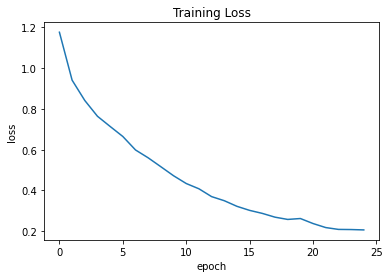
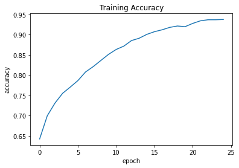
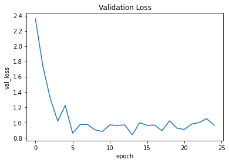
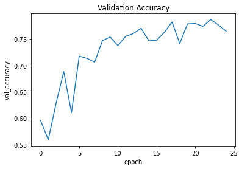
Inference using Colormap Overlay
The raw predictions from the model represent a one-hot encoded tensor of shape (N, 512, 512, 20)
where each one of the 20 channels is a binary mask corresponding to a predicted label.
In order to visualize the results, we plot them as RGB segmentation masks where each pixel
is represented by a unique color corresponding to the particular label predicted. We can easily
find the color corresponding to each label from the human_colormap.mat file provided as part
of the dataset. We would also plot an overlay of the RGB segmentation mask on the input image as
this further helps us to identify the different categories present in the image more intuitively.
# Loading the Colormap
colormap = loadmat(
"./instance-level_human_parsing/instance-level_human_parsing/human_colormap.mat"
)["colormap"]
colormap = colormap * 100
colormap = colormap.astype(np.uint8)
def infer(model, image_tensor):
predictions = model.predict(np.expand_dims((image_tensor), axis=0))
predictions = np.squeeze(predictions)
predictions = np.argmax(predictions, axis=2)
return predictions
def decode_segmentation_masks(mask, colormap, n_classes):
r = np.zeros_like(mask).astype(np.uint8)
g = np.zeros_like(mask).astype(np.uint8)
b = np.zeros_like(mask).astype(np.uint8)
for l in range(0, n_classes):
idx = mask == l
r[idx] = colormap[l, 0]
g[idx] = colormap[l, 1]
b[idx] = colormap[l, 2]
rgb = np.stack([r, g, b], axis=2)
return rgb
def get_overlay(image, colored_mask):
image = keras.utils.array_to_img(image)
image = np.array(image).astype(np.uint8)
overlay = cv2.addWeighted(image, 0.35, colored_mask, 0.65, 0)
return overlay
def plot_samples_matplotlib(display_list, figsize=(5, 3)):
_, axes = plt.subplots(nrows=1, ncols=len(display_list), figsize=figsize)
for i in range(len(display_list)):
if display_list[i].shape[-1] == 3:
axes[i].imshow(keras.utils.array_to_img(display_list[i]))
else:
axes[i].imshow(display_list[i])
plt.show()
def plot_predictions(images_list, colormap, model):
for image_file in images_list:
image_tensor = read_image(image_file)
prediction_mask = infer(image_tensor=image_tensor, model=model)
prediction_colormap = decode_segmentation_masks(prediction_mask, colormap, 20)
overlay = get_overlay(image_tensor, prediction_colormap)
plot_samples_matplotlib(
[image_tensor, overlay, prediction_colormap], figsize=(18, 14)
)
Inference on Train Images
plot_predictions(train_images[:4], colormap, model=model)
1/1 ━━━━━━━━━━━━━━━━━━━━ 7s 7s/step
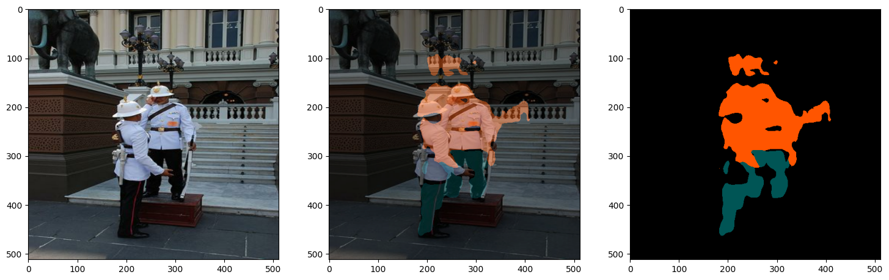
1/1 ━━━━━━━━━━━━━━━━━━━━ 0s 24ms/step
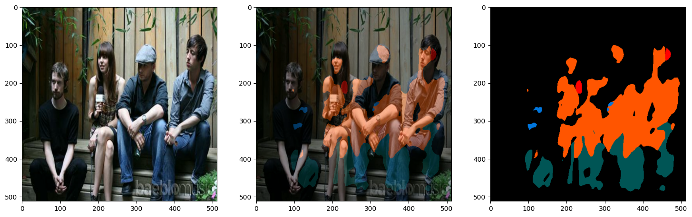
1/1 ━━━━━━━━━━━━━━━━━━━━ 0s 24ms/step
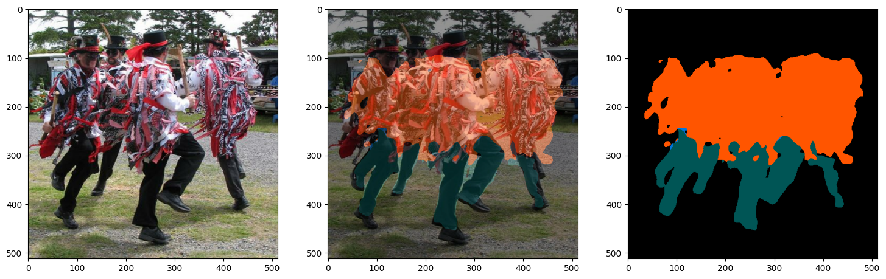
1/1 ━━━━━━━━━━━━━━━━━━━━ 0s 24ms/step
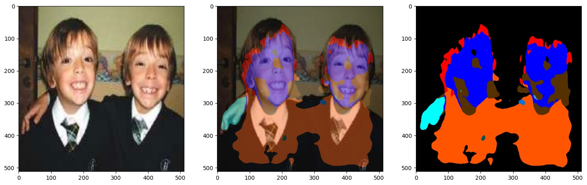
Inference on Validation Images
You can use the trained model hosted on Hugging Face Hub and try the demo on Hugging Face Spaces.
plot_predictions(val_images[:4], colormap, model=model)
1/1 ━━━━━━━━━━━━━━━━━━━━ 0s 24ms/step
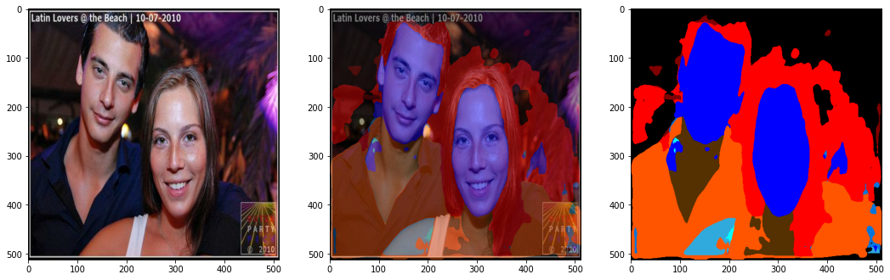
1/1 ━━━━━━━━━━━━━━━━━━━━ 0s 24ms/step
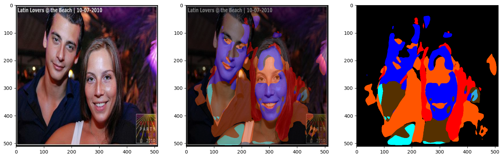
1/1 ━━━━━━━━━━━━━━━━━━━━ 0s 25ms/step
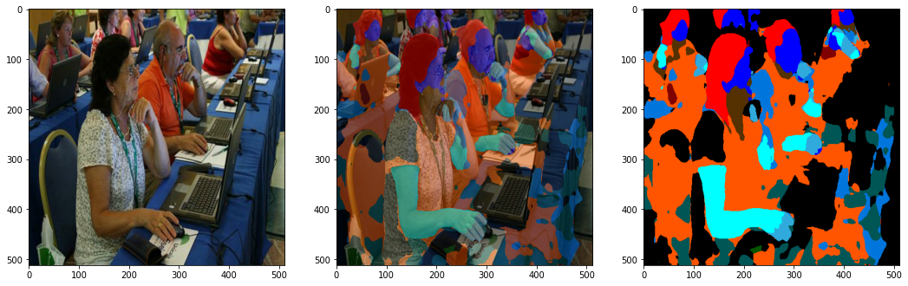
1/1 ━━━━━━━━━━━━━━━━━━━━ 0s 25ms/step
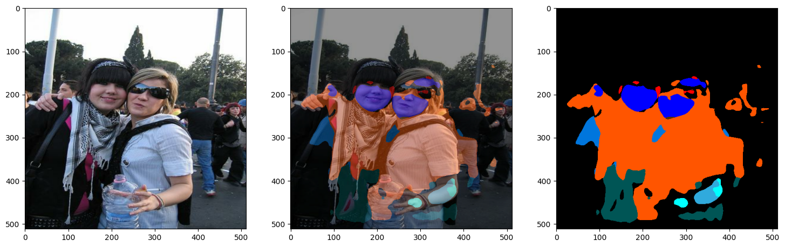